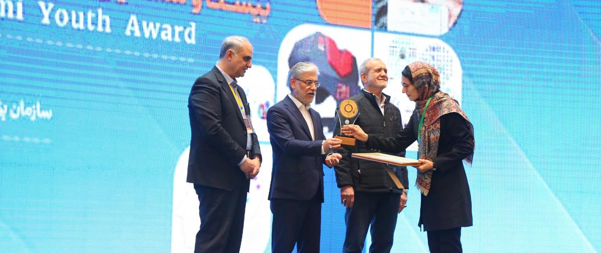

افتخارات و دستاوردهای سمپاد
سازمان ملی پرورش استعدادهای درخشان، در طول سالهای فعالیت خود،
زمینهساز حضور دانشآموزان مستعد در عرصههای مختلف علمی، پژوهشی،
فرهنگی و ورزشی بوده است. دانشآموزان مدارس سمپاد با بهرهگیری از
فرصتهای آموزشی و پرورشی، در رویدادهای ملی و بینالمللی شرکت کرده و
دستاوردهای ارزشمندی به دست آوردهاند.
این موفقیتها تنها به کسب مدال و رتبه محدود نمیشوند؛ بلکه حاصل مسیری
هستند که از شناسایی استعدادها آغاز میشود و با آموزش، پژوهش، خلاقیت و
تلاش ادامه پیدا میکند.
درخشش در المپیادهای علمی
المپیادهای علمی یکی از مهمترین عرصههای حضور دانشآموزان مستعد در
رقابتهای علمی هستند. دانشآموزان سمپاد در رشتههایی مانند ریاضی،
فیزیک، شیمی، زیستشناسی، کامپیوتر، نجوم و اخترفیزیک به رقابت
میپردازند.
حضور دانشآموزان در این رقابتها و کسب مدالهای ملی و جهانی، بخشی از
دستاوردهای علمی جامعه سمپاد به شمار میرود. این موفقیتها نشاندهنده
توانایی دانشآموزان ایرانی در مواجهه با مسائل پیچیده علمی و رقابت در
سطح بینالمللی است.
جشنواره جوان خوارزمی
جشنواره جوان خوارزمی از رویدادهای مهم علمی و پژوهشی کشور است که با هدف
شناسایی و حمایت از ایدهها و طرحهای خلاقانه برگزار میشود.
دانشآموزان با ارائه طرحهای پژوهشی، اختراعات، آثار علمی و ایدههای
نوآورانه، فرصت پیدا میکنند تواناییهای خود را در فضایی علمی به نمایش
بگذارند.
سمپاد نیز با فراهم کردن زمینههای آموزشی و پژوهشی، دانشآموزان را به
مشارکت در چنین رویدادهایی تشویق میکند.
کارسوقهای ملی و فراگیر
کارسوقهای علمی سمپاد از برنامههایی هستند که با هدف گسترش تجربههای
یادگیری و پرورش مهارتهای دانشآموزان برگزار میشوند.
کارسوقهایی مانند هندسه، روش پژوهش، فناوری نانو، مهندسی ژنتیک و
برنامهنویسی، فرصت آشنایی عمیقتر دانشآموزان با حوزههای تخصصی را
فراهم میکنند.
برگزاری این برنامهها، علاوه بر ایجاد فرصت یادگیری، زمینهای برای
شناسایی استعدادهای تازه و تشویق دانشآموزان به فعالیتهای علمی و گروهی
است.
المپیاد ورزشی مدارس سمپاد
ورزش و فعالیتهای جسمانی بخش دیگری از برنامههای تربیتی سمپاد هستند.
المپیاد ورزشی مدارس سمپاد کشور با حضور دانشآموزانی از استانهای مختلف
برگزار شده و فرصتی برای رقابت سالم، تعامل میان مدارس و تقویت روحیه
همکاری فراهم کرده است.
این رویداد در سال ۱۴۰۳ پس از حدود سیزده سال وقفه دوباره برگزار شد و
زمینهای برای گسترش فعالیتهای ورزشی در مدارس استعدادهای درخشان ایجاد
کرد.
حضور در عرصههای بینالمللی
یکی از اهداف مهم سمپاد، فراهم کردن زمینه حضور دانشآموزان مستعد کشور
در رویدادهای علمی بینالمللی است.
المپیادهای جهانی، رقابتهای علمی و برنامههای بینالمللی، فرصتی برای
معرفی تواناییهای دانشآموزان ایرانی و تبادل تجربه با دانشپژوهان دیگر
کشورها هستند.
موفقیت در این عرصهها، علاوه بر افتخارآفرینی برای دانشآموزان،
نشاندهنده ظرفیت علمی و پژوهشی نسل جوان کشور است.
سمپاد؛ بستری برای شکوفایی استعدادها و پرورش نسل آینده دانش، خلاقیت و
نوآوری.